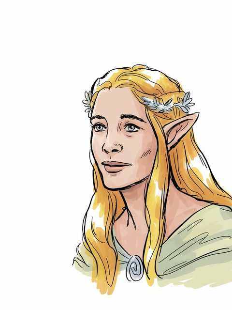

The Arda Archive · Volume III · Records of Persons
The Arda Archive · Galadrielcmxix
◌
Galadriel
House of Finarfin

House of Finarfin
Of the house
House of Finarfin of Lothlóriena
The dates as the archive holds them
Y.T.–sails T.A. 3021b
The name in the scriptsc
— Cirth, Angerthas Daeron
The archive sets this name in the cirth, Angerthas Daeron mode. TOLKIEN DID NOT WRITE IT SO: the letter values are Appendix E's, read from the tables named below; the setting of this name in them is the archive's own work and is offered as nothing else. The sarati are REFUSED, and the refusal is the archive's published answer: it holds the shapes -- 48 of 48 of the ConScript block, Björkman's outline face, and 66 value-labelled plates -- and nothing whatever that binds a shape to a sound. Every value table in every source it can reach is an image carrying no text.
a The text — Silm, table I (House of Finwe) [C]
b The text — LotR App B, 3021: 'They come to the Grey Havens ... with the Three Keepers' -- the annal names the Three Keepers, not her [C]
c The transcription is the ARCHIVE'S OWN WORK and is not attested: the letter values are read from site/arda_scripts.json, site/arda_cirth.json and site/arda_cirth_codepoints.json, and the mode is named beside each line. [I-M]
d The ruling — the owner's ruling of 13 August 2026, on the 552 generated images: 'we are free to use them'. That settles the LICENCE and does not settle the HAND, which is recorded above as what it is. [C]
☞DK·vijWhat
A triskele boss — the archive's own hand
Volume III · Records of Personscmxx
◌
What the corpus says
“Lady of Lothlórien. Called Lady of the Noldor, Lady of the Golden Wood, the White Lady; see”e
“indented from the margin (e.g. p. 380). In The History of Galadriel and Celeborn, however,”f
Two trees and the moons — the archive's own device, not a likeness
“Later in this essay it is said that though called Nerwen by her mother and Artanis (‘noble”g
“and Nerwendë Artanis, sur-named Alatáriel The wife of Angaráto was named Eldalótë, and”h
“Her mother-name was Nerwen (‘man-maiden’), 1 and she grew to be tall beyond the”i
“Tales, notably in the part of that book entitled ‘The History of Galadriel and”j
“Her mother-name was Nerwen ‘man-maiden’, and she grew to be tall beyond the”k
“final scene will be the passage of Bilbo and Elrond and Galadriel through”l
The name stands in 3,194 cited lines, in 135 of the corpus's 192 texts — most often in The Ring Goes Ever on (269), The Lord of the Rings a Reader's Companion (247), Perilous Realms Marjorie Burns (198).m
e The text — Unfinished Tales of Numenor and Middle Earth · l.13823[C]
f The text — Unfinished Tales of Numenor and Middle Earth · l.60[C]
g The text — Unfinished Tales of Numenor and Middle Earth · l.7289[C]
h The text — The Peoples of Middle Earth · l.11526[C]
i The text — Unfinished Tales of Numenor and Middle Earth · l.7232[C]
j The text — The Peoples of Middle Earth · l.226[C]
k The text — The Peoples of Middle Earth · l.11265[C]
l The text — The Letters of J R R Tolkien Revised and Expanded Ed · l.5895[C]
m Counted — site/arda_apparatus.json[C]
☞DK·viijThe
Seven stars — the archive's own tailpiece
The Arda Archive · Galadrielcmxxi
◌
The drafts against the published text
387 Cited lines stand in 10 volumes of the drafts and 471 in 13 of the published books — the published text carries it more often than the drafts did.n
“Alatáriel / Altáriel” — the name is near this line and the archive does not assert that it is this record.q
As the archive holds the line
of House of Finarfin; in Lothlórien; child of Finarfin, Eärwen; wedded to Celeborn; father or mother of Celebrían; Y.T.–sails T.A. 3021.r
By another name
Nerwen — called so by her mother Eärwen (mother-name), in Quenya. “Her mother-name was Nerwen (‘man-maiden’), 1 and she grew to be tall beyond the measure even of the women of the Noldor”s
n Counted — site/arda_apparatus.json[C]
o Counted — site/arda_apparatus.json[C]
p Counted — site/arda_apparatus.json[C]
q The line — The Complete Guide to Middle Earth — no line published[EXT]
r The table — Silm, table I (House of Finwe)[C]
s The passage — Unfinished Tales of Numenor and Middle Earth · l.7232[EXT]
DL·iBy
Volume III · Records of Personscmxxii
◌
By another name
Artanis — called so by her father Finarfin (father-name), in Quenya. “Later in this essay it is said that though called Nerwen by her mother and Artanis (‘noble woman’) by her father, the name she chose to be her Sindarin name was Galadriel”t
Named in the same lines
Celeborn (326), Elrond (117), Gandalf (101), Irmo (Lórien) (79) — a shared line is a fact about the line, not a claim that the two met.u
counted from corpus lines that name BOTH records. A shared line is a fact about the line, not a claim that the two met; `eg` names a line a reader can open. [C]
By its style
Galadriel is styled Lady of Lórien — “'Wonderful folk, I think, sir. And the Lady of Lorien, Galadriel, you should”v
What its name is said to mean
Galadriel — “elvish rights. Galadriel (‘Glittering garland’) is the chief elvish woman”w
By its name
Galadriel is Sindarin.x
What was looked for and not found
a marginal hand recording a change to this record — searched over 59 verified notes in site/arda_hands.json, and nothing was found.y
t The passage — Unfinished Tales of Numenor and Middle Earth · l.7289[EXT]
u Counted — site/arda_apparatus.json[C]
v The line, found through Tolkien Gateway — The War of the Ring · l.6137[C]
w The line, found through Tolkien Gateway — The Letters of J R R Tolkien · l.18148[C]
x The lexicon — https://eldamo.org/content/words/word-757674465.html[EXT]
y The search — site/arda_apparatus.json[C]
DL·ijGalathil
What this archive holds back, and why — 22 item(s)
corpus silent ×10 — no tier-1 corpus file holds this value as whole words. C831 lets a reader see a TG datum only where a Tolkien text carries it; this archive's Tolkien texts do not.
not beside the person ×7 — the value stands in this archive's tier-1 corpus and so does the person's name, and no ONE LINE carries both in a form that attributes the value to this person. Four things put an item here and they are all about the LOCUS, never about the claim: the two never share a line; every mention of the name on that line is a genitive (`the Heir of Isildur was crowned King of Gondor` -- a true claim on a line about Aragorn); another person the archive holds stands between them (`Isildur had established Meneldil as King of Gondor`); or the two match the line under folding but not as a token sequence, so the archive cannot say precisely where they stand. The claim may well be true. This module has no line it can show a reader for it, and a citation a reader cannot check is what rule 1 forbids.
not distinctive ×5 — the value is a common word, a field label, or a fragment of the person's own name, so a corpus match on it would confirm the vocabulary and not the claim.
Part of the Arda Archive — a corpus-first index of Tolkien's legendarium; claims are cited or marked how far they are inferred, silences are declared, and the colophon prints how many claims carry neither.